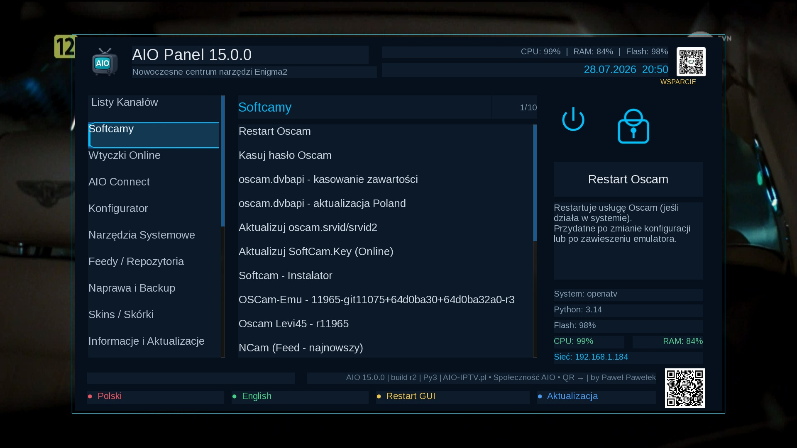
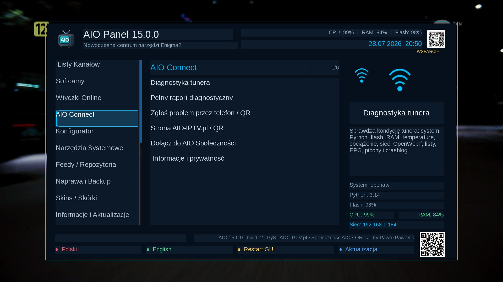

Witam na mojej stronie Paweł Pawełek
AIO Connect • diagnostyka • raport QR • Enigma2
AIO Panel 15.0.0
Nowa wersja rozszerza AIO Panel o moduł AIO Connect, który pomaga sprawdzić tuner, przygotować raport techniczny i przenieść zgłoszenie na telefon przez kod QR.

AIO Panel 15.0.0 — AIO Connect
Wersja 15.0.0 zachowuje dotychczasowe funkcje AIO Panel i dodaje nową kategorię AIO Connect bezpośrednio pod pozycją „Wtyczki Online”.
Nowe funkcje AIO Connect
- diagnostyka kondycji tunera i ocena 0–100
- pełny raport techniczny zapisywany lokalnie
- anonimowy kod urządzenia bez ujawniania surowego MAC
- zgłoszenie problemu przez telefon i kod QR
- kod QR prowadzący do strony AIO-IPTV.pl
- funkcja „Dołącz do AIO Społeczności”
- jasna informacja o prywatności raportu
Co sprawdza diagnostyka
- system, wersję Pythona i architekturę
- flash, RAM, obciążenie i temperaturę
- sieć, DNS, HTTPS i OpenWebif
- głowice, bukiety, lamedb, EPG i picony
- aktywny softcam i wykryte crashlogi
- ostrzeżenia i błędy wymagające uwagi
Połączenie wtyczki ze stroną
Po świadomym wybraniu funkcji zgłoszenia AIO Connect może utworzyć tymczasowy raport na stronie. Kod QR otwiera go na telefonie, gdzie użytkownik może dopisać opis problemu, skopiować dane albo — po zalogowaniu — opublikować gotowe zgłoszenie w Społeczności AIO.
- raport nie jest wysyłany automatycznie podczas zwykłej diagnostyki
- utworzenie raportu internetowego wymaga potwierdzenia użytkownika
- raport tymczasowy wygasa automatycznie po 24 godzinach
- strona nie wymaga przepisywania modelu, systemu i wersji Pythona
Zdjęcia / podgląd

Instalacja i aktualizacja
Po instalacji wykonaj restart GUI Enigma2.
wget -q -O - "https://raw.githubusercontent.com/OliOli2013/PanelAIO-Plugin/main/installer.sh?$(date +%s)" | /bin/shInstalacja pobranego IPK przez FTP
Wgraj plik do /tmp, a następnie wykonaj:
opkg install --force-reinstall /tmp/enigma2-plugin-extensions-panelaio_15.0.0_all.ipkAIO Panel 15.0.0 — by Paweł Pawełek